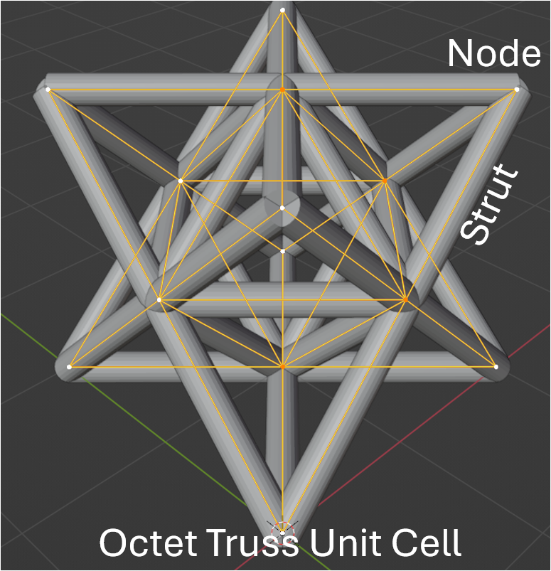
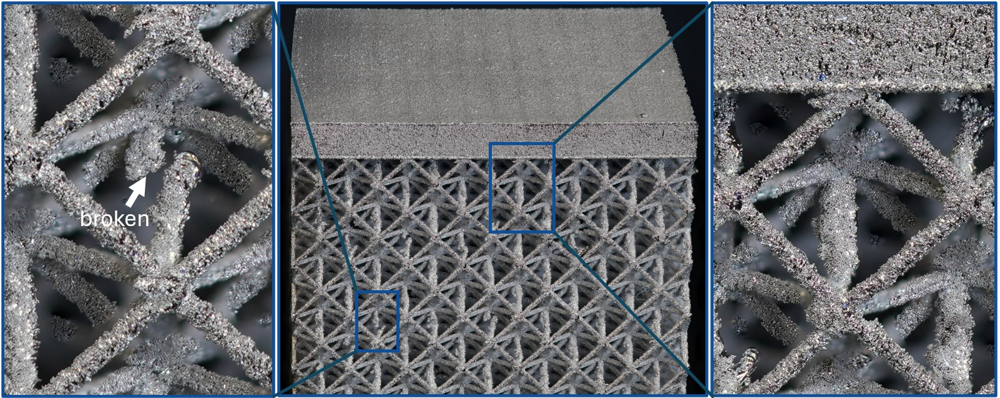
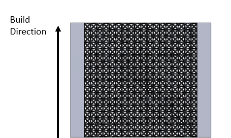

Background
Laser powder-bed fusion
Laser powder-bed fusion (LPBF) is an additive manufacturing (AM) process for metals. A thin layer of metal powder (typically 20–60 µm) is spread across a build plate, a laser selectively melts one cross-section of the part, the platform lowers by one layer, and the cycle repeats thousands of times. Building layer by layer makes internal channels and lattice geometries possible that subtractive machining cannot produce.
That freedom comes at a price. LPBF is sensitive to laser power, scan speed, layer thickness, build orientation, and local thermal history. Variation in these conditions produces porosity, lack of fusion, dimensional error, surface roughness, and adhered, partially melted powder (dross). Thin, overhanging, or poorly supported features such as lattice struts are particularly vulnerable.
Why lattice structures, and why the octet truss
Lattice structures are periodic networks of slender struts joined at nodes. By tuning the unit-cell topology, strut diameter, and cell size, engineers can tailor stiffness, strength, energy absorption, thermal transport, and mass independently of one another. This is why lattices appear in lightweight aerospace brackets, orthopedic implants that encourage bone in-growth, heat exchangers, and impact-mitigating structures.

The octet truss (Figure 1) is one of the most widely used unit cells. It is built from a regular octahedron surrounded by eight tetrahedra, giving a stretch-dominated structure in which struts carry load primarily in tension and compression rather than bending. This yields a near-optimal strength-to-weight ratio and nearly isotropic mechanical behavior. Just as important for inspection, an octet lattice is highly regular: every unit cell is nominally identical, every strut has one of a small number of orientations, and the complete part can be described compactly as a spatial graph of nodes and edges. That regularity turns deviations from the expected pattern into strong indicators of manufacturing defects.

In a lattice, a single defective strut can matter. A missing, broken, or severely thinned strut removes a load path, and several defective struts in the same region can create a local weak zone that dominates the failure behavior of the whole part. For critical applications, the manufacturer therefore needs to know not just whether the part has defects but how many, of which kind, where, and whether they cluster.
Why X-ray CT
A lattice cannot be inspected from the outside (Figure 2). X-ray computed tomography (CT) is the standard non-destructive technique for looking inside: the specimen is rotated in an X-ray beam, hundreds to thousands of radiographic projections are acquired, and a reconstruction algorithm produces a three-dimensional array of voxels whose intensity reflects X-ray attenuation. Dense metal appears bright, air appears dark, and the manufactured lattice can be separated from the background by segmentation.
What has been done: strut-level visualization
LatticeAnalytics (Miao et al., IEEE TVCG 2025 [1]) demonstrates a strut-centric inspection pipeline for mostly intact struts with problematic surfaces or shapes, and participants are welcome to build on its ideas. It also leaves much open: it relies on a manual VR alignment step, its encodings target roughness and bending rather than missing or disconnected struts, and it does not address the part-level questions at all (where defects occur, whether they cluster, how they relate to orientation and build height, and how lattices compare). Those gaps are the focus of this contest.
The data
The contest uses LLNL's Missing Struts dataset, which was created to develop inspection techniques for lattice defects [2]. It includes real CT scans of real printed parts.
Specimens
Nine 9 × 9 × 9 octet-truss lattice cubes were printed in stainless steel 316L by laser powder-bed fusion. The design specifications are:
| Property | Design value |
|---|---|
| Unit-cell topology | Octet truss |
| Lattice size | 9 × 9 × 9 unit cells |
| Unit-cell edge length | 4.56 mm |
| Designed relative density | 10 % |
| Designed strut diameter | 350 µm |
| Material | Stainless steel 316L |
| Process | Laser powder-bed fusion |
| Nominal missing-strut fraction | 0 %, 0.5 %, or 1 % of struts, depending on the specimen (three specimens per level) |
Struts were removed from the design files at random before printing, at the nominal percentages above, so that the same inspection method can be tested against known defect fractions. Note that the as-built parts also contain defects that were not designed in: measured missing-strut percentages can exceed the nominal value, and disconnected or broken struts are commonly observed [2].
Files per specimen
Each specimen is delivered as a folder containing a CT volume and a nominal graph. The STL files describe the meshes used for printing; each printing mesh is shared by the three specimens of the same nominal fraction:
| File | Format | Description |
|---|---|---|
| CT volume | Stack of .tif slices | Reconstructed X-ray CT data, one stack per specimen (e.g., 210125_Brian_Tran_strut_lattice_01 1 Slices). Grayscale intensity is proportional to X-ray attenuation. Slices are ordered along the build (z) direction. Voxel sizes are listed below. |
| Printing meshes | .stl | 0.stl describes the complete lattice with no intentionally removed struts. The 0.5.stl and 1.stl meshes were used to print specimens with 0.5 % and 1 % of struts intentionally removed, respectively; those struts are already absent from these meshes. |
| Nominal spatial graph | .json | Node positions and edge (strut) lists describing the lattice topology as designed. |
Specimens, dataset names, and CT voxel sizes
The table below maps each specimen to its dataset folder name, the mesh used to print it, and its CT voxel size. The printing-mesh column records how each specimen was manufactured; for missing-strut detection with an STL reference, use 0.stl for every specimen. On this site, specimens are referred to by nominal missing-strut percentage and replicate number (0.5-1 is the first replicate at 0.5 %, i.e., dataset 210127_Brian_Tran_strut_lattices_0point5dash1 1 Slices). The CT volumes are stored as integer voxel grids without embedded physical units; use the voxel sizes to convert voxel indices and distances to physical units (e.g., when comparing measured strut diameters to the designed 350 µm). Note that the three 0 % specimens were scanned with slightly anisotropic voxels.
| Specimen | Nominal missing struts | Dataset folder | Mesh used for printing | Voxel size [x, y, z] (µm) |
|---|---|---|---|---|
0-1 | 0 % | 210125_Brian_Tran_strut_lattice_01 1 Slices | 0.stl | [55.32, 58.41, 56.54] |
0-2 | 0 % | 210125_Brian_Tran_strut_lattice_02 1 Slices | 0.stl | [56.65, 58.22, 56.50] |
0-3 | 0 % | 210125_Brian_Tran_strut_lattice_03 1 Slices | 0.stl | [58.10, 58.10, 58.10] |
0.5-1 | 0.5 % | 210127_Brian_Tran_strut_lattices_0point5dash1 1 Slices | 0.5.stl | [58.09, 58.09, 58.09] |
0.5-2 | 0.5 % | 210127_Brian_Tran_strut_lattices_0point5dash2 1 Slices | 0.5.stl | [58.09, 58.09, 58.09] |
0.5-3 | 0.5 % | 210127_Brian_Tran_strut_lattices_0point5dash3 1 Slices | 0.5.stl | [58.09, 58.09, 58.09] |
1-1 | 1 % | 210127_Brian_Tran_strut_lattices_1_1 1 Slices | 1.stl | [58.09, 58.09, 58.09] |
1-2 | 1 % | 210127_Brian_Tran_strut_lattices_1_2 1 Slices | 1.stl | [58.09, 58.09, 58.09] |
1-3 | 1 % | 210127_Brian_Tran_strut_lattices_1_3 1 Slices | 1.stl | [58.09, 58.09, 58.09] |
Each lattice is sandwiched between two solid plates, and the assembly was built with the plates standing vertically on the build platform, so the build direction runs parallel to the plates and along one edge of the lattice (Figure 3). "Bottom" and "top" in the sense of build height are therefore the lattice faces closest to and farthest from the build platform, not the faces touching the plates.

The build direction is the most important geometric reference in this contest, because strut quality in LPBF depends on a strut's angle to it and on its distance from the build platform. In the data, the build direction is the slice-stacking axis of the CT volume (z in the TIF stack). Measure build height, strut inclination, and orientation-dependent statistics relative to this axis.
Access
Download CT data
Download the CT volumes as TIF stacks: tif_stacks.tar.gz.
Stream with OpenVisus
To stream the CT data directly with OpenVisus, use the dataset URLs below. Copy a link address into your OpenVisus client to load that specimen without downloading the full TIF archive.
Held-out ground truth
For the purpose of evaluating the Agentic AI Track, the organizers hold a curated list of the missing struts for every specimen: the struts that were intentionally omitted in the design, verified against the CT volume. This list is not released during the contest. After the contest, the full ground truth will be published together with the submissions so that the dataset can serve as a lasting benchmark.
Numbered citations refer to the reference list.